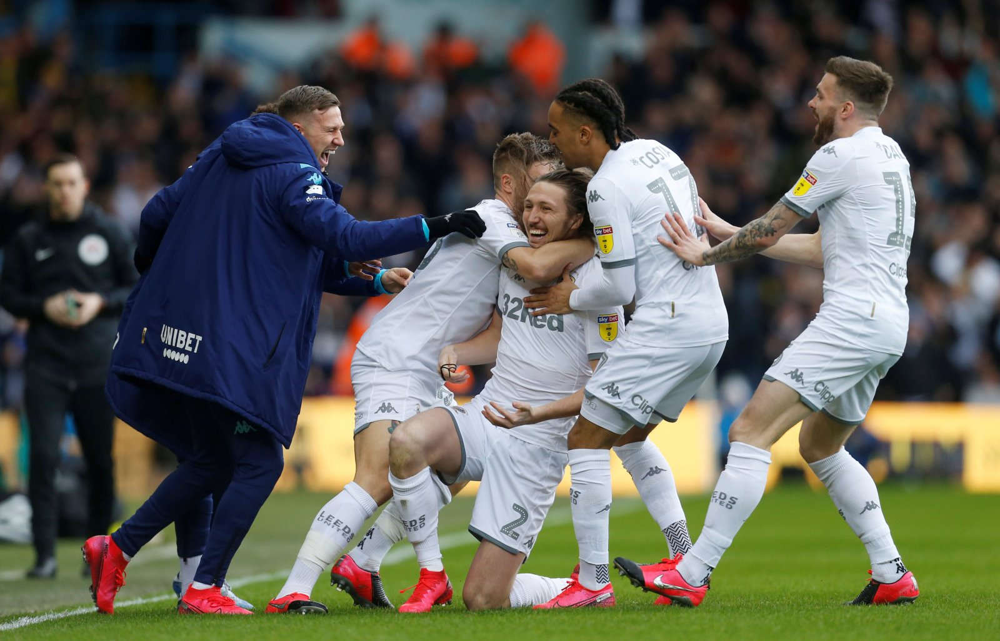

O Leeds United aproveitou o último dia da janela de transferências para fazer mais uma contratação. Trata-se de Raphinha, meia-atacante do Rennes, da França. O jogador viajou nesta segunda-feira (5) para o norte da Inglaterra para assinar contrato válido por quatro temporadas e se juntar à equipe treinada por Marcelo Bielsa.
Os valores não foram divulgados, mas a imprensa inglesa especula que o Leeds teria pago 17 milhões de euros (R$ 111 milhões, pelas cotações atuais), além de bônus ao Rennes. Na última temporada, Raphinha foi considerado um dos melhores jogadores da Ligue 1, que terminou precocemente por conta do novo coronavírus.

Mais do que simplesmente títulos, o futebol é feito de lamentos e comemorações. E após 16 anos de uma profunda depressão, o Leeds United, um dos clubes mais tradicionais – além de amado e odiado – da Inglaterra retorna à Premier League. O acesso foi oficializado após a vitória do Huddersfield sobre o West Brom, o segundo colocado da Championship (a segunda divisão), na abertura da 45ª rodada. O título ainda nem tinha vindo (foi oficializado um dia depois), mas o que os torcedores queriam comemorar já pode, enfim, ser comemorado. E com todo o merecimento que você puder imaginar.

O Leeds jogando em casa venceu o Fulham em um jogo de muita emoção e com 7 gols. Com um primeiro tempo movimentado, onde logo aos 5 minutos Helder Costa abriu o placar para os donos da casa e aos 34 minutos Mitrovic empatou para o Fulham, o Leeds ainda conseguiu ir para o intervalo na vantagem, pois aos 41 minutos Klich fez o segundo da equipe.
A segunda etapa começou a todo vapor, com Bamford ampliando a vantagem do Leeds aos 50 minutos e 7 minutos mais tarde Helder Costa marcando novamente. Tudo parecia resolvido, porém em 5 minutos o Fulham marcou 2 gols e voltou a partida. Os gols saíram aos 62 e 67 minutos. E assim terminou o confronto, 4X3 Leeds.
Projeto desenvolvido por Gabriel Eduardo C. Nicodemos - Student BandTec